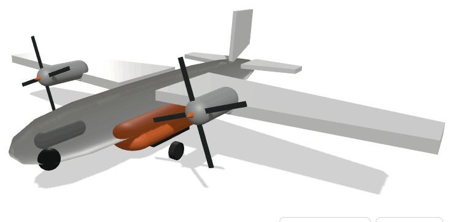
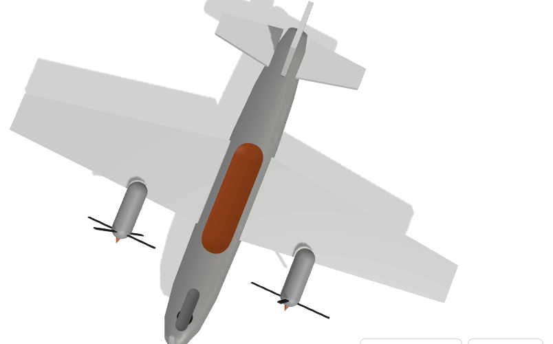
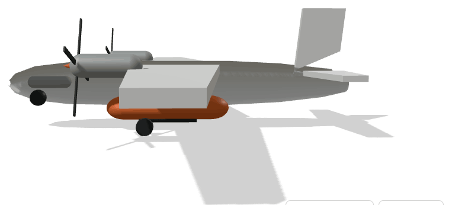
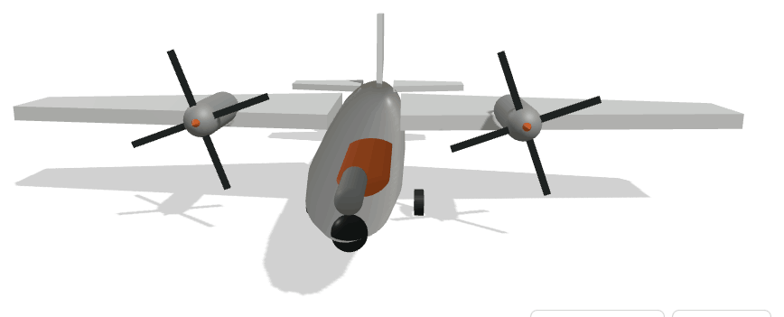
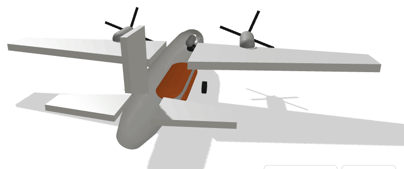

Plataforma aérea não tripulada de combate a incêndios em fase de ignição, com asa alta e propulsão bimotor. Desenho inspirado nos aviões de ataque directo a fogos, adaptado a operação autónoma e a ciclos de recarga rápidos em pistas e albufeiras próximas.




Conter a ignição inicial de incêndios rurais nos primeiros minutos, operando em janelas de risco — noite, fumo denso, terreno acidentado — em que meios tripulados estão limitados ou impedidos de voar.
Detecção por infravermelhos com classificação automática de focos; planeamento de largada assistido por vento e orografia; tanque com sistema de espuma; navegação a baixa altitude com modelo digital do terreno.
Redução do número de ignições que evoluem para grandes incêndios, com efeito directo em área ardida, custo de combate e vidas. Base industrial partilhada com as plataformas militares, o que dilui custos de desenvolvimento.
